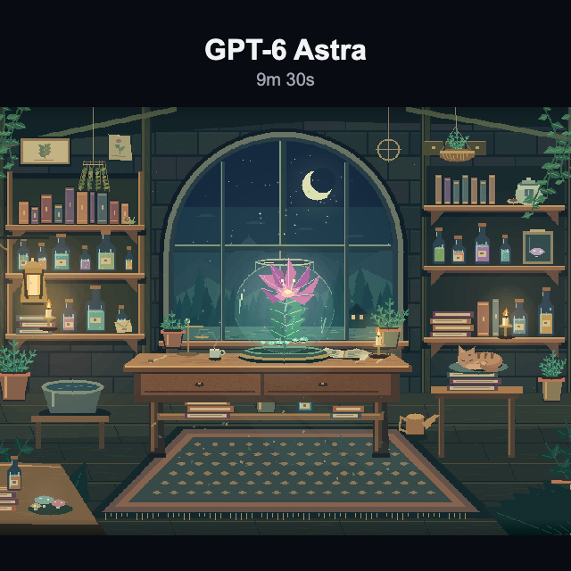
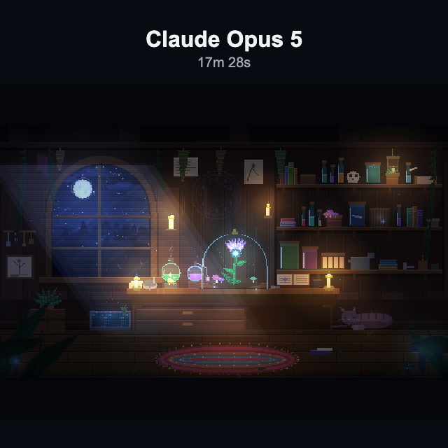
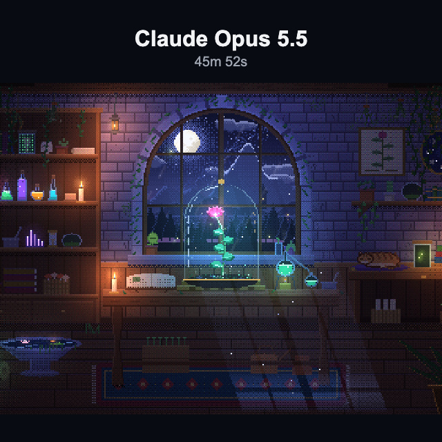

01
GPT-6 Astra
- 生成時間
- 9m 30s
- Total tokens
- 700,002
- API換算（参考）
- 約 $1.98
- HTML行数（配布実測）
- 195行
行数は元報告196行、配布HTML実測195行。
Reproducible AI Creative Experiments
お題は「魔法の植物研究室」。
3つのモデルが描いた作品を、生成の記録とともに。

行数は元報告196行、配布HTML実測195行。

実行条件・数値の内訳は Metrics に記録。

出力上限後の自動続行1回を含む。
API料金は元報告の単価前提による参考換算です。実請求額ではありません。
Field notes / 001
それぞれ1試行の観察記録です。モデル一般の性能や順位を示すものではありません。同じ High 設定でも、計算量や実行ツールが同一とは限りません。
One-shot は、初回以降に人間の追加指示がないこと。モデル自身による複数の呼び出し・検証・修正は含みます。Claude Opus 5.5 は、出力上限後の自動続行1回を含みます。
Human edits 0：原HTMLは改変していません。作品はそれぞれのページで開きます。この一覧へはブラウザの「戻る」で戻れます。プロンプト全文と数値の詳細は、以下の記録からたどれます。